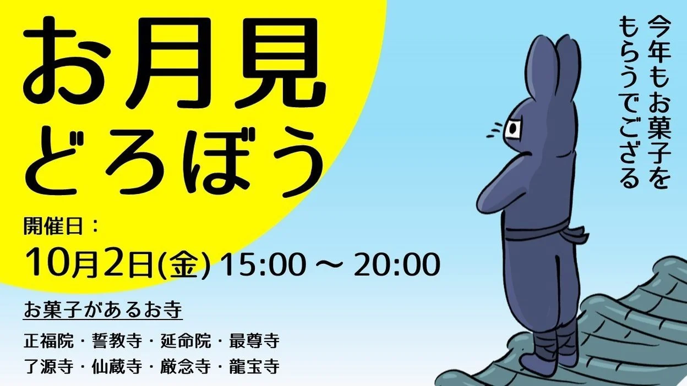
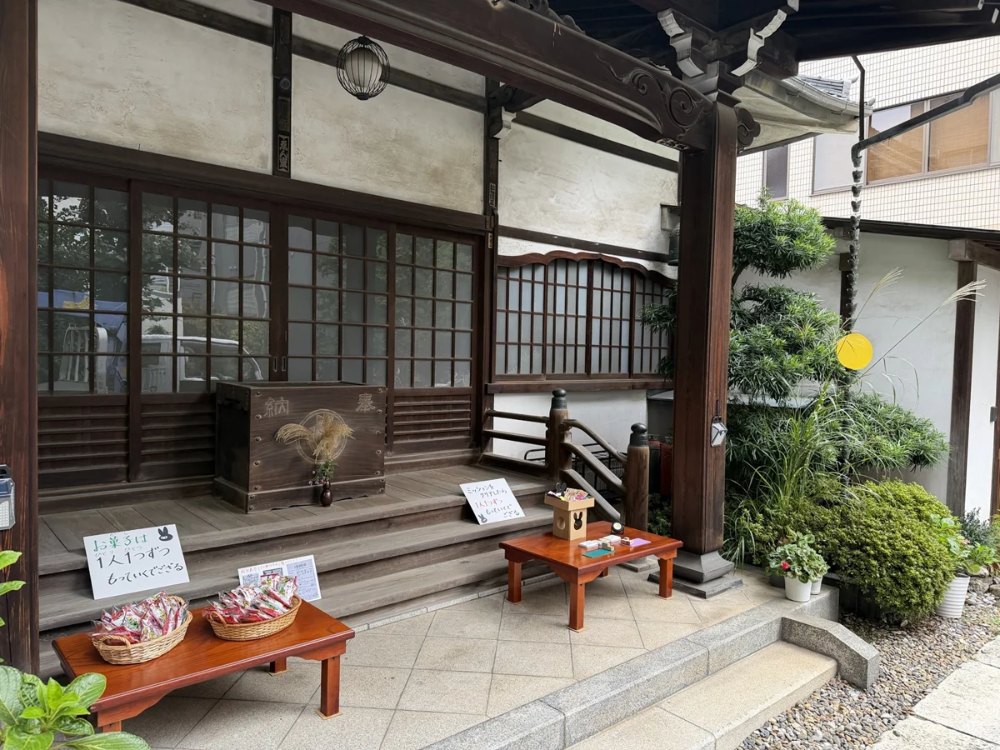
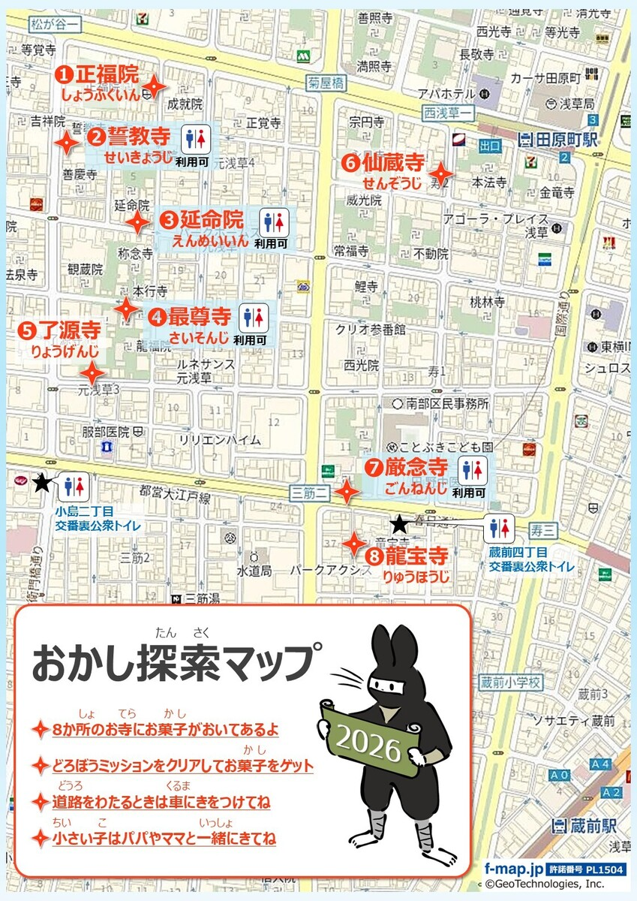
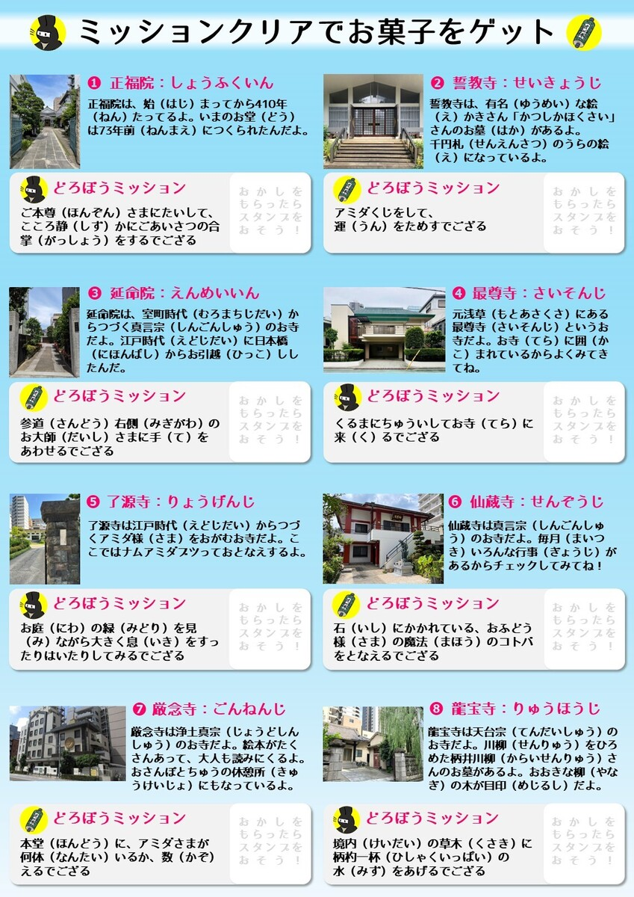
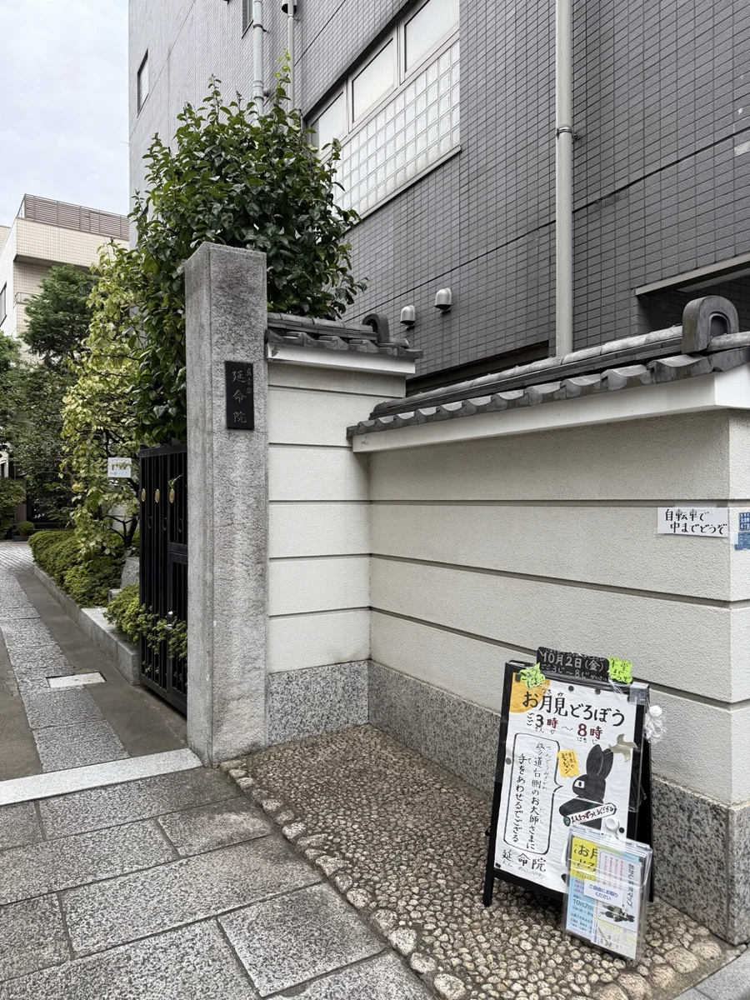
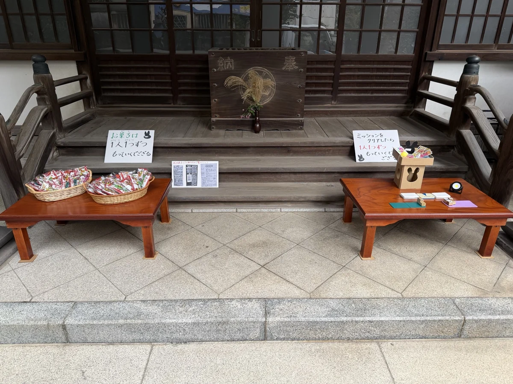

延命院からのお知らせ
お月見どろぼう 2026
ご参加いただき、ありがとうございました。
開催のご報告
約300人のお子さまと、
賑やかな秋の一日。
2026年10月2日、お月見どろぼうを開催しました。延命院には約300人ものお子さまにお越しいただき、境内はとても賑わいました。遊びに来てくださったお子さま、ご一緒にお越しくださった保護者の皆様、本当にありがとうございました。
お寺は、普段は少し入りづらい場所に感じられるかもしれません。でも、特別な用事がなくても、気軽に立ち寄っていただいてよい場所です。トイレを利用するだけでも、どうぞ遠慮なくお入りください。
今日のお月見どろぼうを通じて、「お寺はいつでも気軽に立ち寄っていい場所なんだ」と知っていただけていたら、嬉しく思います。これからも、保護者の皆様の暮らしの身近な場所でありたいと願っています。
お月見どろぼうは、来年も開催を予定しています。また保護者の皆様とお会いできることを楽しみにしております。
通常の参拝時間は7:00〜17:00です。お近くを通りかかった際には、どうぞお気軽にお立ち寄りください。
2026年の開催案内・会場の写真を見る

秋のまちと、お寺と。
お菓子をきっかけに、
お寺へ遊びに来ませんか。
「お月見どろぼう」は、お月見のお供えを子どもたちがもらい歩く風習にちなんだ行事です。今年も台東区の8か所のお寺で、子どもたちを迎えます。
延命院でも、本堂前にお菓子とお月見の飾りをご用意しました。お寺ごとのミッションやスタンプラリーを楽しみながら、いつもとは少し違うお寺の時間をお過ごしください。

開催概要
ご参加の前に
- 日時
- 2026年10月2日（金）
15:00〜20:00お菓子がなくなり次第、終了となります。 - 延命院の会場
- 延命院 本堂前
東京都台東区元浅草4-5-2
交通案内を見る → - 参加寺院
- 正福院・誓教寺・延命院・最尊寺・了源寺・仙蔵寺・厳念寺・龍宝寺
- スタンプシート
- 地図付きのシートを各寺院でお受け取りいただけます。
この催しの開催時間は、通常の参拝時間（7:00〜17:00）とは異なります。
参加のしかた
お寺めぐりを楽しもう
お寺でシートを受け取る
地図を見ながら、参加しているお寺を訪ねてみてください。
ミッションに挑戦する
それぞれのお寺の案内を見て、「どろぼうミッション」に挑戦しましょう。
お菓子をもらう
延命院のお菓子は、1人1つずつ。会場の掲示に沿ってお楽しみください。
小さなお子さまは保護者の方とご一緒に。お寺の間を移動するときは、車や自転車に気をつけてお越しください。
お寺めぐりの道案内
おかし探索マップ
参加する8か所のお寺を地図でご覧いただけます。延命院は、地図の「③」です。

ミッションとスタンプ
それぞれのお寺で、小さな挑戦を。
お寺ごとに異なるミッションが用意されています。下の一覧で確認しながら、お寺めぐりをお楽しみください。
延命院のミッション
参道の右側にいらっしゃるお大師さまに、手を合わせましょう。

延命院の会場から
お迎えの準備ができました



